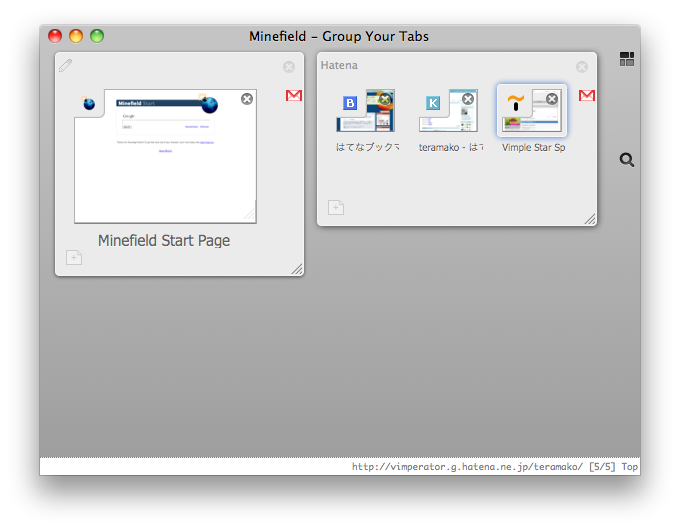
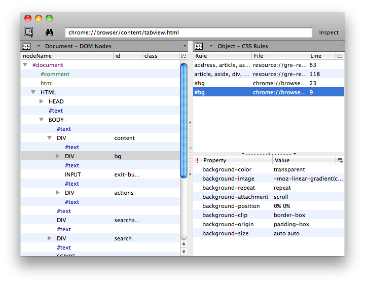
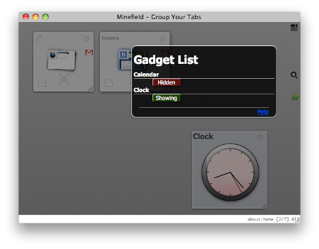
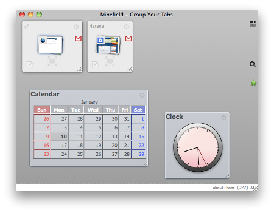

自己紹介
 teramako
teramako
- Hatena: id:teramako
- Twitter: @teramako
- Mozilla JavaScript 大好き
- 2007年くらいから Vimperator にはまる
- パッチを送ったりしてたらいつの間にかメンテナーに
- Thunderbird 拡張も少し (WAT)
Panorama で遊ぼうMozilla 勉強会@東京 4th |

面白いけど...
デスクトップっぽくしてみたい
userChrome.css 編
まずは DOM Inspector でパノラマの構造を調査

#bg に背景Firefox内部コンテンツへスタイルを適用する古典的方法
@namespace html url("http://www.w3.org/1999/xhtml");html|*... (参考: http://www.w3.org/TR/css3-namespace/)@-moz-document url(....) { ... }を使用
@charset "utf-8";
@namespace url("http://www.mozilla.org/keymaster/gatekeeper/there.is.only.xul");
@namespace html url("http://www.w3.org/1999/xhtml");
@-moz-document url("chrome://browser/content/tabview.html") {
html|*#bg {
background-image: url(....) !important;
background-repeat: no-repeat !important;
background-size: cover !important;
background-position: top left !important;
}
}
Stylish でも同じようなことはできるはず。（画像をbase64エンコードしてインラインに書く必要がある？ > Panorama のバックグラウンド）
styleコマンドを使った
:style -name panorama-bg chrome://browser/content/tabview.html <<EOM
#bg {
background-image: url(....) !important;
background-repeat: no-repeat !important;
background-size: contain !important;
background-position: top left !important;
}
EOM
消す場合は
:delstyle -name panorama-bg
Vimperator 便利！！
パノラマにガジェットを!!


<script src="...">の埋め込みできない<link rel="stylesheet" href="...">の埋込みができない⇓
パノラマが起動されるまで
__proto__にパノラマのwindowオブジェクト| 変数名/関数名 | 説明 |
|---|---|
| id | 必須。ガジェットのID. 要素のid属性にも使われる |
| title | ガジェットのタイトル |
| xml | コンテンツ。E4Xで記述 |
| css | CSS文字列 |
| rect | 初期表示位置. {top, bottom, left, right, width, height}(px値)を含むオブジェクト |
| draggable | Bool値(Default: true) ドラッグの可否 |
| closeable | Bool値(Default: true) クローズの可否 |
| risizable | Bool値(Default: true) リサイズの可否 |
| function onLoad | 初期化時に呼び出される |
| function onUnLoad | クローズ時に呼び出される |
| function onShown | パノラマが表示されたときに呼び出される |
| function onHidden | パノラマが閉じるときに呼び出される |
var id = "sample";
var title = "Sample Gadget";
var rect = { top: 20, left: 10, width: 250 };
var xml =
This is a sample
;
var css = <![CDATA[
#sample .date { font-size: 16pt; }
]]> .toString();
function onShown () {
gadget.contentElm.querySelector(".date").innerHTML =
(new Date).toLocaleString();
}
|
ご清聴ありがとうございました |